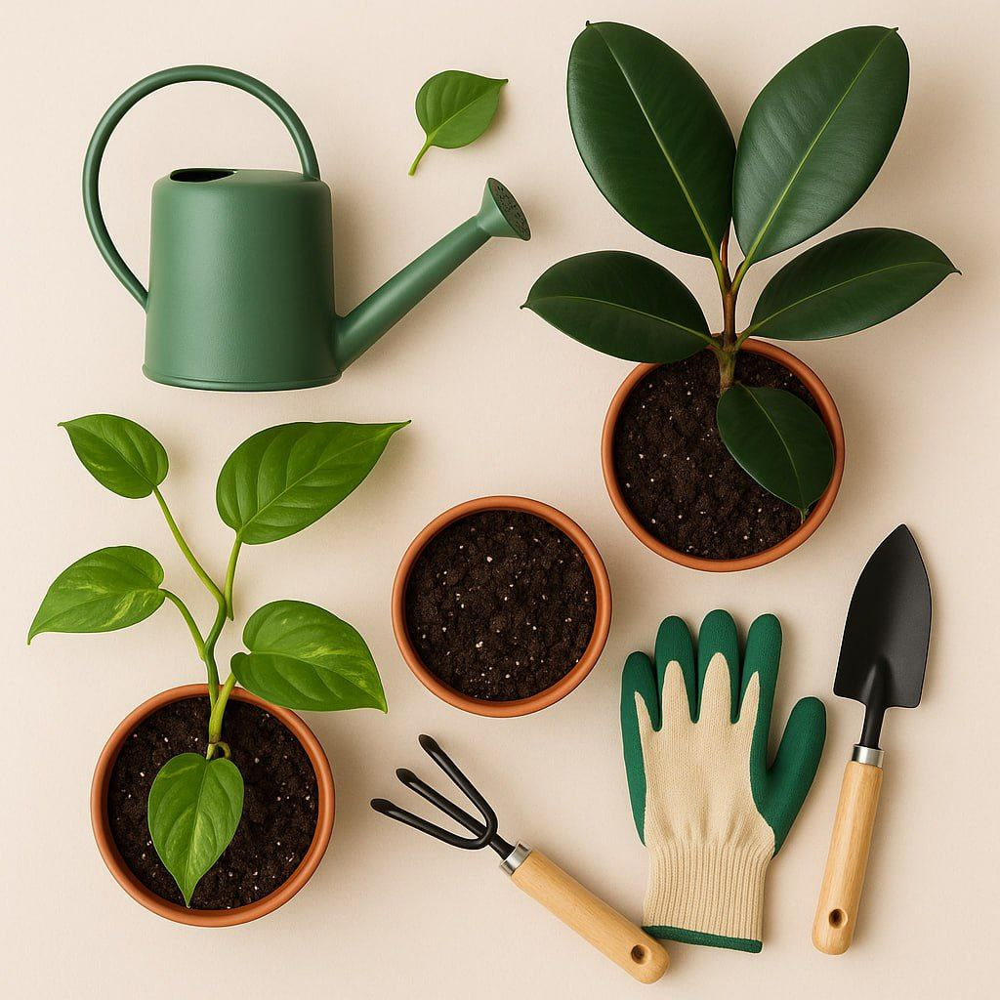
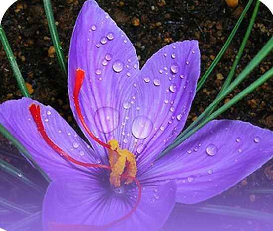
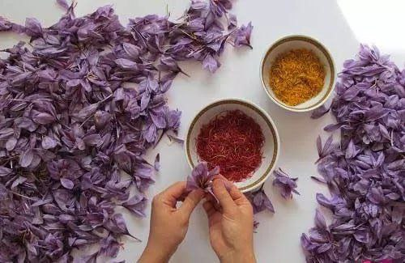

This is the logo of the Tarhe Sabs company
Green is a symbol of nature, life, and vitality. It is a combination of blue and yellow, and psychologically, it combines a sense of calm and optimism.
As a general rule, saffron should be harvested when the purple flowers are fully ripe and the caps are well developed. At this point, the saffron bulb in the soil has reached 12°C, the petals are half-opened, and the stigmas inside the flower have grown approximately 6 cm.
Saffron is the most expensive Iranian spice used in cooking. The saffron bulb has a brown husk that protects it. After the plant is planted, growth begins and a stalk is formed and buds appear at its top
Rate My Stare:★★★★☆
| 😇Tarhe Sabs | |||||
|---|---|---|---|---|---|
| Product | Description | Each one Kg | Price | ||
| Fresh Saffron | we have perfect Fresh Saffron | Each kilo of dried saffron | 1000$ | ||
| Dry Saffron | we have perfect Dry Saffron | Each kilo of dried saffron | 2000$ | ||
| both | we have perfect both | The price of saffron doubles | 3000$ | ||
| Note:These are just afew examples of my interests 😇 | |||||